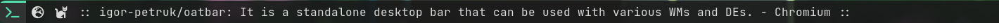
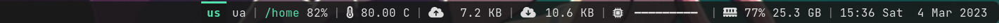
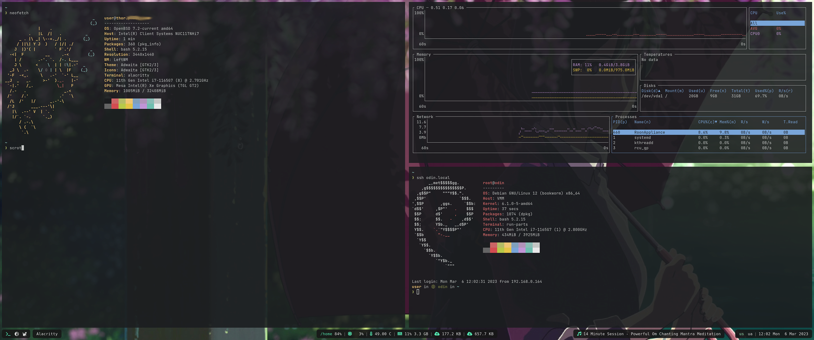

Oatbar - standalone desktop bar




{kind=link}

The motivation for creation of oatbar was to extend on the idea of Unix-way for toolbars.
Inspired by i3bar which consumes a JSON stream that controls it's appearance, we take this
idea much further without becoming a DIY widget toolkit.
JSON or plain text streams can be turned into text panels, progress bars or even images without any significant coding effort.
Example
[[bar]]
height=32
blocks_left=["workspace"]
blocks_right=["clock"]
[[command]]
name="clock"
command="date '+%a %b %e %H:%M:%S'"
interval=1
[[command]]
name="desktop"
command="oatbar-desktop"
[[block]]
name = 'workspace'
type = 'enum'
active = '${desktop:workspace.active}'
variants = '${desktop:workspace.variants}'
on_mouse_left = "oatbar-desktop $BLOCK_INDEX"
[[block]]
name = 'clock'
type = 'text'
value = '${clock:value}'
Here clock command sends plain text, but desktop streams
structured data in JSON. Each is connected to text and enum selector
widgets respectively. oatbar-desktop ships with oatbar, but it is an external tool
to a bar, as can be replaced your own script.
Feel free to run oatbar-desktop and investigate it's output. oatbar consumes
multiple text formats and this data can be
displayed with minimal configuration on widgets called blocks.
Ideas
I truly aspire to build something unique with oatbar, something what other status bars lack. Do you have a cool or unconventional feature you'd like to see in oatbar?
Join the disussion and brainstorm!
Next Steps
-
In can be partial, like the lack of support for
polybarformatting, but a lot of scripts are useful. ↩